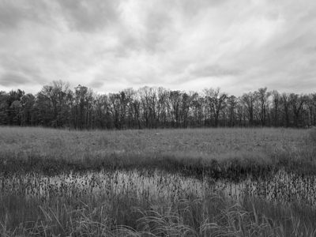
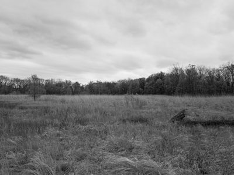
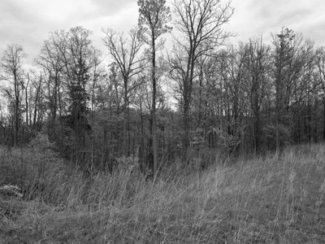

Public Lands Institute
Map
Archive
About
Krejci Dump, Cuyahoga Valley National Park
OH

Krejci Dump, Cuyahoga Valley National Park 1 · 2026-05-13
_DSF2098.jpg

Krejci Dump, Cuyahoga Valley National Park 2 · 2026-05-13
_DSF2102.jpg
Krejci Dump, Cuyahoga Valley National Park 3 · 2026-05-13
_DSF2105.jpg

Krejci Dump, Cuyahoga Valley National Park 4 · 2026-05-13
_DSF2109.jpg
Krejci Dump, Cuyahoga Valley National Park 5 · 2026-05-13
_DSF2110.jpg
← Cuyahoga Valley National Park
Flint Ridge State Memorial →